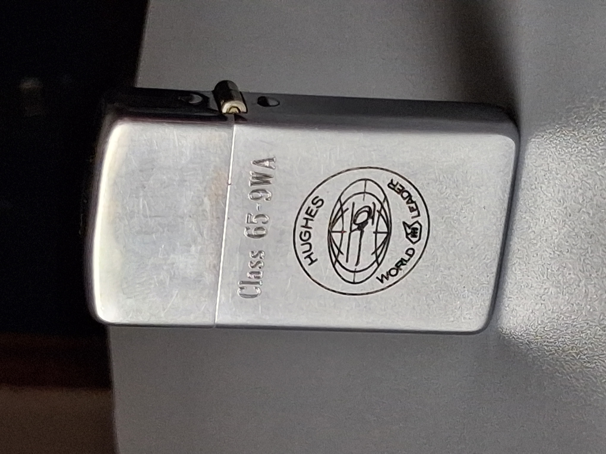
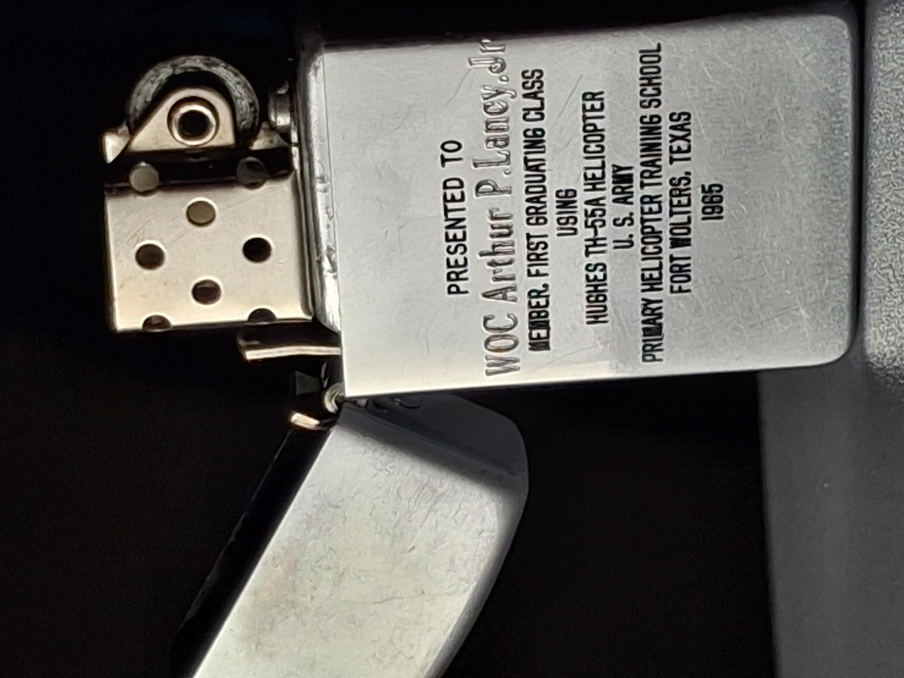
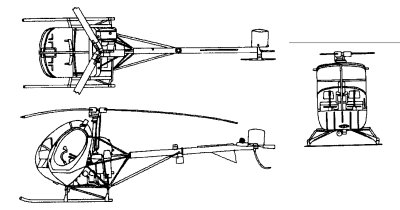
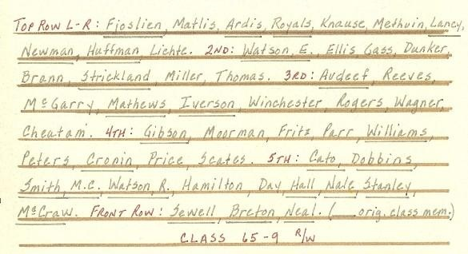
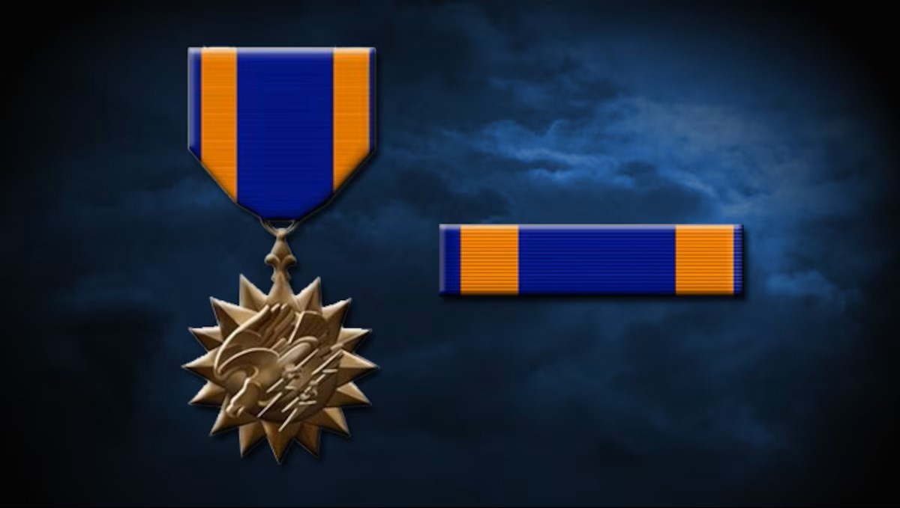

Neutral identification
1965 PARK Lighter / Precision Made by Park Industries, Murfreesboro, Tennessee slim presentation lighter inscribed to WOC Arthur P. Lancy Jr. The reverse inscription identifies Lancy as a member of the first graduating class using the Hughes TH-55A helicopter at the U.S. Army Primary Helicopter Training School, Fort Wolters, Texas, 1965.
External source links
These links point to outside archives, not pages created by the consignor.
- VHPA Class 65-9W photograph — Vietnam Helicopter Pilots Association
- VHPA Class 65-9 R/W roster — Vietnam Helicopter Pilots Association
- Tropic Lightning News Vol. 2 No. 13 — 25th Infantry Division Association, April 3, 1967
{kind=link}
{kind=link}
Evidence separation & tactical attribution
| Material Artifact Evidence | Separated Historical Context | Archive Status |
|---|---|---|
| Class 65-9WA marking on lighter body and insert | VHPA class photograph and roster (1965) | Cross-verified |
| Reverse inscription naming WOC Arthur P. Lancy Jr. | Tropic Lightning News Air Medal citation (April 3, 1967) | Service context only |
| Hughes World Leader insignia and TH-55A text | Hughes aircraft manufacturer marking | Verified |
| Park Industries base stamp and U.S.A. origin | Park Industries, Murfreesboro, Tennessee | Manufacturer verified |
Physical authentication from detail photographs
The detail photographs strengthen the object-based evidence by showing the mechanical components, inscriptions, and manufacturer markings in high resolution.


Artifact evidence
| Object | Slim presentation lighter |
|---|---|
| Primary base stamp | PRECISION MADE BY PARK INDUSTRIES, MURFREESBORO, TENN. U.S.A. |
| Obverse marking | Class 65-9WA / Hughes World Leader |
| Reverse inscription | PRESENTED TO WOC Arthur P. Lancy, Jr. / MEMBER, FIRST GRADUATING CLASS USING HUGHES TH-55A HELICOPTER / U.S. ARMY PRIMARY HELICOPTER TRAINING SCHOOL / FORT WOLTERS, TEXAS / 1965 |
| Insert marking | CLASS 65-9WA (stamped on removable insert side) |
| Condition | Lid opens cleanly; hinge firm; striker wheel turns; insert present; no flint installed; no current spark; not cleaned, fueled, or serviced for operation |
Recipient identification
| Name | Arthur P. Lancy Jr. |
|---|---|
| Rank (training) | WOC (Warrant Officer Candidate) |
| Rank (service) | WO (Warrant Officer) |
| Training class | 65-9W (65-9 R/W) |
| Training year | 1965 |
| Training location | Fort Wolters, Texas |
| Service unit | Co. B, 25th Aviation Battalion |
| Service period | mid-1966 through mid-1967 |
| Awards | Air Medal (Tropic Lightning News, Vol. 2 No. 13, April 3, 1967) |
Artifact photos
Complete photographic documentation of the lighter showing all sides, details, and components.


Separated source images
Aircraft context, group photo, roster/name-list, and award listing are separated for appraiser review. Use the external links section above to access archival sources.

Class Context
Class 65-9W represents a pivotal moment in Army Aviation training history. The Hughes TH-55A Osage was officially adopted as the Army's primary trainer in 1964, and Class 65-9W was among the first full classes to train on this new aircraft.
Class designation: 65-9W (also listed as 65-9 R/W)
Year: 1965
Location: Fort Wolters, Texas
Aircraft: Hughes TH-55A Osage
Training type: Primary helicopter training (Warrant Officer Candidate)

Aircraft Significance
The Hughes TH-55A Osage marked a major transition in Army Aviation primary training from fixed-wing to rotary-wing aircraft. The inscription on this lighter explicitly references the TH-55A as the "first graduating class using" this aircraft, which represents exceptional documentary value as period-engraved presentation text.

Historical Record
The TH-55A adoption created immediate documentary interest. Contemporary presentation lighters naming the specific aircraft type and class are exceptionally rare textual variants. This lighter's reverse inscription explicitly states "MEMBER, FIRST GRADUATING CLASS USING HUGHES TH-55A HELICOPTER," making it an artifact of significant historical documentation value.

Roster Evidence
The VHPA name-list image confirms Lancy's placement in Class 65-9W training records. This is separated from the lighter itself and should be read as archival corroboration, not manufacture provenance.

Later Service Context
This award listing documents Lancy's later service with Company B, 25th Aviation Battalion. It does not prove the lighter was carried in Vietnam or used in combat.
Consignor contact
Daniel Bret Lingar
itslingardaniel1@gmail.com
Archive reference
Archive ID: FW-ARC-0001
Archive name: Fort Wolters Class 65-9WA Research Archive
Focus: Company B, 25th Aviation Battalion (mid-1966 through mid-1967)
Last updated: June 2026